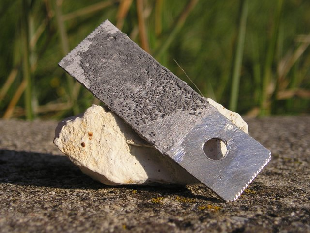
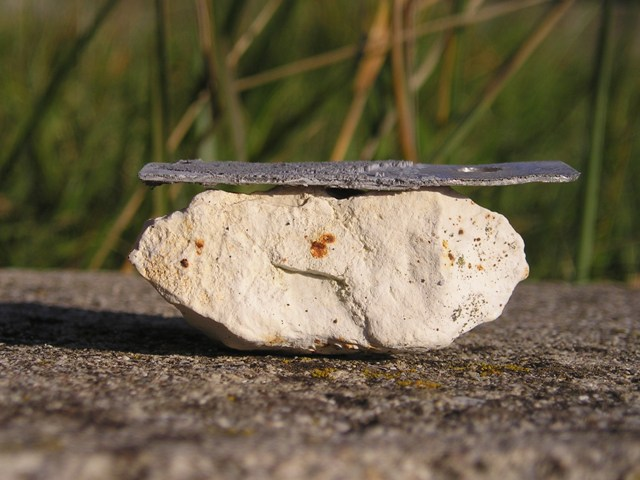

Ogni tanto metto nell'armadio qualche "esperimento" e poi magari me ne dimentico; mi è capitato sottomano il file dell'esperienza che vado ora a descrivere e che a suo tempo aveva destato curiosità in alcuni di coloro che, come me, hanno questo strano hobby della chimica sperimentale.
Si tratta di un originale metodo analitico per il mercurio, devo dire assai originale, ideato nel 1932 da Schmidt e Tornow.
Purtroppo non sono riuscito a trovare, come mi sarebbe piaciuto, delle notizie riguardo questi due chimici, che avrebbero integrato la fredda descrizione dell'esperimento stesso.
Naturalmente ho voluto provarlo, anche perchè è una reazione specifica per questo metallo.
In sostanza si tratta di condurre una elettrolisi in ambiente neutro di una soluzione della sostanza in esame usando un catodo di alluminio: se il mercurio è presente, il catodo una volta esposto all'aria si ricopre di una patina soffice di Al2O3, molto ben visibile.
E' ben noto che il mercurio catalizza l'ossidazione superficiale dell'alluminio in maniera molto caratteristica e spettacolare ed il metodo (nella sua formulazione più semplice) sfrutta questo principio.
Ho operato in questo modo:
- poco prima della prova preparare una piccola lamina di alluminio di una decina di cmq, perfettamente pulita.
Per far ciò ravvivare bene la superficie con carta vetrata fine e successivamente immergere qualche minuto in NaOH diluita fino ad inizio di sviluppo di idrogeno.
In questo modo siamo sicuri che l'alluminio sarà perfettamente pulito ed esente da ossido superficiale.
Estrarre la laminetta, risciacquarla bene in acqua distillata ed immergerla immediatamente nella soluzione neutra da analizzare, collegandola come catodo ad un alimentatore di corrente.
Porre all'anodo un bastoncino di carbone; i laboratori ricchi (quindi non il mio...) useranno come ovvio un bell'elettrodo di platino.

Ho usato come test una soluzione di 20 mg di HgCl2 in 50 ml di acqua per rendere l'effetto sicuramente fotografabile.
Mi sono poi reso conto che 20 milligrammi (!) sono una camionata rispetto alla sensibilità del metodo... avrei dovuto stare molto più leggero!
La soluzione è neutra e diluitissima quindi la resistività della cella sarà molto elevata, dato che non ho voluto aggiungere alcun elettrolita di supporto.
In ogni modo alimentando la celletta anche solo a 12 V passa sufficiente corrente da far depositare quella minima quantità di mercurio che serve per essere evidenziata.
Far passare corrente per una decina di minuti, quindi levare la laminetta e porla ad asciugare all'aria in un posto tranquillo.
Dopo un quarto d'ora sarà ricoperta da una fragilissima lanugine grigia di Al2O3, come ben si vede nelle foto.


Se l'esperimento è ben condotto la sensibilità è elevatissima; la mia fonte bibliografica dice 1 microgrammo/litro!
Se avessi avuto più tempo e voglia avrei provato con successive diluizioni a vedere fin dove arrivavo con una procedura così "grezza".
Mi è stata segnalata anche una variante microchimica più "professionale" del metodo descritto, che sfrutta, oltre all'elettrolisi, la presenza di chinone e rosso alizarina con la conseguente formazione di una lacca di alluminio maggiormente visibile.
Condotto in tal modo, il metodo analitico (credo a cura di Feigl) permette di rivelare una frazione veramente infinitesima di microgrammi di mercurio!
Si tratta quindi di una sensibilità spaventosa, pur realizzata senza l'ausilio di quegli strumenti moderni di analisi che io chiamo affettuosamente "apparecchi con la spina".